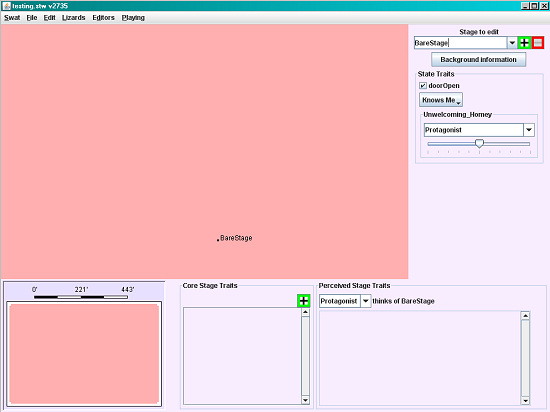
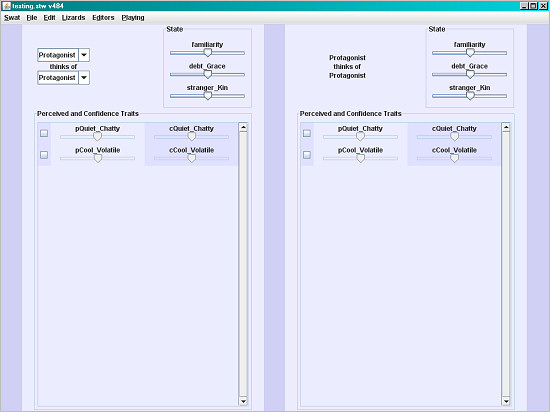
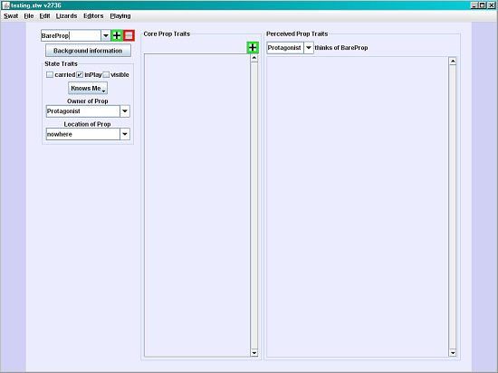

SWAT starts you off in the Verb Editor, a tool you'll be using a lot. You'll see a screen with four columns.
The leftmost column (pink) shows a list of existing Verbs. The first category is System Verbs. These are used by the system and are basic to every storyworld. Only certain, limited kinds of changes are allowed for System verbs, so don't touch them for now. You'll be adding your own Verbs shortly.
The next column to the right (blue) shows the currently selected Verb and some components of the Verb that can be edited:
The Properties button brings up the
Verb's basic settings, including the assigned Emoticon (a graphic showing the Actor's facial expression), the Audience (which other Actors witness the verb), WordSockets which define which storyworld elements participate in or are affected by the Verb, and a few other details.
The Consequences button is used to define the effects of the
Verb on the storyworld once it's used in a Sentence.
The rest of this column is the Role Editor, where the author defines how various
Actors will respond to the Verb, i.e., what roles they will assume. A very complex Verb can include a lot of potential Roles for various Actors.
Notice the green "+" and red "-" buttons in the Role Editor.
This button always means "Add a new one of these things"
This button always means "Delete this"
The third (white) column is the Script Editor. This is where details of the Verb are defined using the scripting language Sappho.
The fourth column contains links to Operators. These are used in building scripts. The links will become available once you start editing scripts.
Verbs are the most complicated elements used in building a storyworld. We're not going to create any Verbs now; we'll come back to the Verb Editor in a bit.
The Stage Editor
On the menu bar, chose "Editors" and skip down to the Stage Editor to define a Stage (a setting) for your storyworld. The editor window looks like this:

The big salmon-colored area is a map of your storyworld. There's one predefined Stage there already: BareStage. At the right, beside "Stage to Edit," click the green "+" to add a new Stage, and change this Stage's name to "Joe's Bar."
Note that Joe's Bar appears on the storyworld map. You can click the bullet by its name and drag it to wherever you want on the map.
Click "Background Information." Here you can describe the Stage, and include an image if you wish. Close the Background Information window and glance at the "State Traits" box, and the "Core Stage Traits" and "Perceived Stage Traits" at the bottom of the page. These are where you define what the Stage is like, and how it's perceived by the Actors.
But we don't have any Actors yet! Let's move on.
The Actor Editor
Select the Actor Editor from the Editors pulldown in the menu bar. You'll see this:
The default Actor is the Protagonist, the hero of your storyworld, who is driven by the player. You can change the Protagonist's name if you want; s/he will still be the Protagonist of the storyworld.
Again, there's a "Background Information" button that you can use to describe the current Actor and assign an image. Below the Background Information button are the State and Mood sections. These are some basic Attributes that apply to any Actor. They're pretty self-explanatory.
To the right of this column, the main part of the window is where "Core Actor Traits" are defined. A couple of basic traits already exist, along with a box marked "male." If that boxed is unchecked, the Actor is female. (More detail about Actor traits may be found in the Storyworld Author's Guide under Actors.)
The predefined traits are also considered Attributes of the Actor:
Quiet_Chatty (how loquacious the Actor is)
Cool_Volatile (how much of a temper the Actor has)
Note that each trait name consists of two extremes, such as "quiet" and "chatty." This bipolar naming structure helps you assign and quickly evaluate traits for various actors. Use a similar name structure (such as Short_Tall, Kind_Cruel, Timid_Brave, Ugly_Attractive) when you create new traits.
Let's create a couple of Actors, Tom and Fred.
Select "Protagonist" and enter "Tom" instead. Tom is now the Protagonist. Uncheck the "female" box under "Core Actor Traits" to make him male. Change his location to Joe's Bar.
Click the green "+" button under "Actor to Edit." Type "Fred" over "new actor." Make him male, and put him in Joe's Bar too.
The Relationship Editor
From the menu bar, choose the Relationship Editor. This editor allows you to define how well Actors know each other and what they think of each other.

Right now it shows "Tom" in both of the Actor boxes at the top left. Using the pulldown arrows to the right of the windows, change the bottom box to "Fred."
Now you can adjust how Tom perceives Fred's traits, and the confidence he has in his opinion. (Details about perception and confidence traits are in the Storyworld Author's Guide, under Relationships.) Notice that the right half of the screen now shows how Fred perceives Tom's traits.
There's also a "State" box on each side of the screen with three options: Familiarity, Debt_Grace, and Stranger_Kin. These represent the Actors' opinions, so they might not be the same in both directions. For example, Tom might feel that he's familiar with Fred, but Fred might not think he's familiar with Tom. Fred might feel he's in debt to Tom, while Tom might feel it's he who owes Fred a favor.
You can adjust any of the sliders to change the relationship between these two Actors.
The Prop Editor
From the menu bar, open the Prop Editor. This looks a lot like the Actor Editor:

Change the name of the default Prop, "BareProp," to "whiskey bottle," and set its location to Joe's Bar. Note that the owner is set as Tom, the Protagonist. Add a second Prop, "chair," also in Joe's Bar. For this Prop, the default owner is Fate.
You can define additional core traits and perceived traits for the Props. We won't bother with these at the moment.
The Copyrights Editor
This editor allows you to define the copyright status of your storyworld, as well as to provide copyright information and attributions for any outside artwork and text you decide to use. Don't worry about this Editor for now.
Now that you've seen all the editors and created some storyworld elements, you're ready to start developing story action. Save your storyworld at this point. We'll come back to it in a bit, but first, to help you understand how the Storyteller Engine will execute your instructions, take a look at the Engine Cycle Overview.